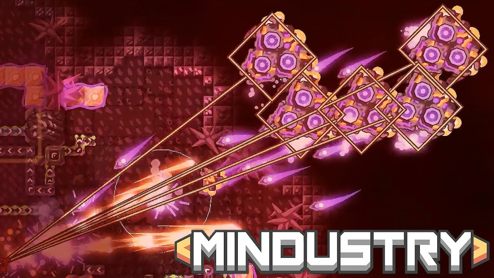
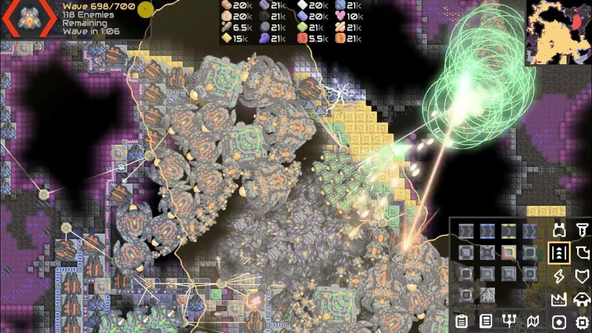
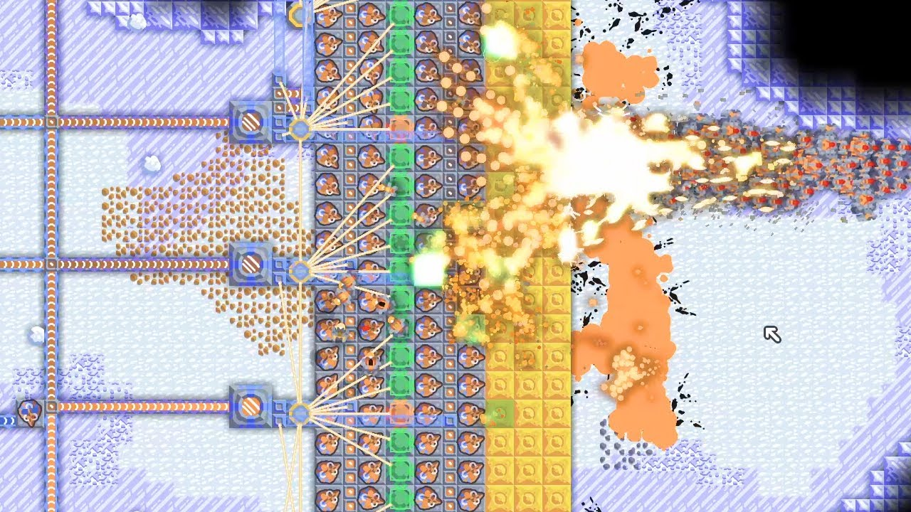
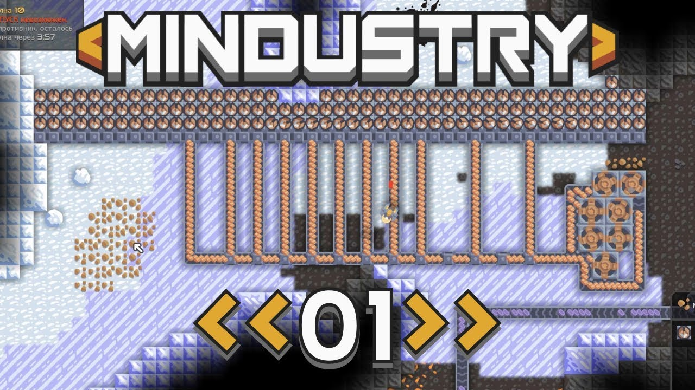

Введение
Mindustry — это не только про строительство и логистику, но и про грамотное ведение боя. Здесь побеждает не тот, у кого больше турелей, а тот, кто умеет планировать, распределять ресурсы и использовать тактические преимущества.
1. Понимание врага и анализ волн
Прежде чем строить оборону, внимательно изучи типы врагов. Воздушные волны требуют зениток и плазменных турелей, а наземные лучше останавливать стенами и артиллерией.
💡 Совет: посмотри состав ближайших волн в меню — это поможет предугадать направление атаки.
2. Слои обороны
Одна линия турелей — это почти всегда провал. Создавай оборону слоями: первая линия — стены и лёгкие турели, вторая — тяжёлое вооружение, третья — ремонт и энергетическая поддержка.
При таком подходе враги теряют импульс, пока добираются до центра, а ты успеваешь пополнять запасы и чинить постройки.
3. Эффективное использование юнитов
Юниты — твоя мобильная сила. Используй их не только для атаки, но и для разведки и ремонта. Малые юниты быстро отвлекают врага, а тяжёлые мехи разрушают критические цели.
⚙️ Комбинируй типы юнитов — это создаёт хаос у противника и даёт тебе преимущество.
4. Тактика наступления
При атаке важно не просто ломать врага лоб в лоб, а разрушать ключевые узлы — источники энергии и конвейеры с боеприпасами.
После этого оборона противника ослабеет, и можно переходить к финальному штурму.

5. Синергия энергии и боеприпасов
Турели без стабильного питания и подачи ресурсов — бесполезны. Следи, чтобы каждая линия снабжения имела резерв, а батареи были размещены с защитой.
Заключение
Тактика боя в Mindustry — это искусство баланса между экономикой, обороной и нападением. Побеждает тот, кто умеет адаптироваться к ситуации и использовать карту с умом.
Анализируй, экспериментируй, и твоя база станет неприступной крепостью!